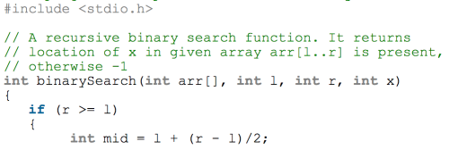
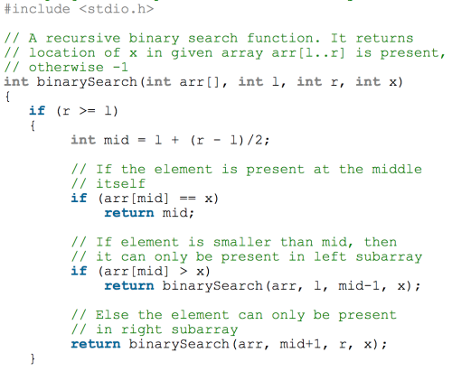
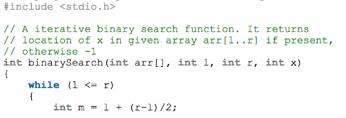
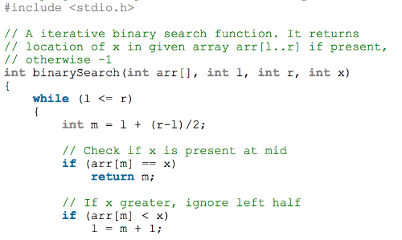
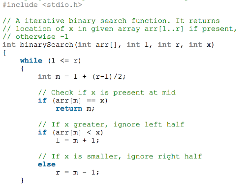
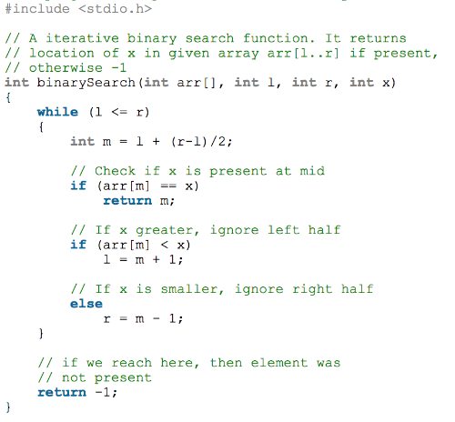

We know the algorithm and have seen a visualization of the algorithm. Now, let's actually implement a solution.
This will be implemented in C++, but can be easily translated into different languages.
We will be going through a recursive implementation, as well as an interative implementation.
|  | 1. We pass in an array, a left and right index, and target element. The function continues to run while the right index is greater than the left index.
To find the middle index, we subtract the right index from the left index, divide that by 2, and add back the left index. Adding the left index in the end ensures that you don't double check an element. |
| 2. The first check that happens is if the element at the middle index is equal to our target. If not, we go to our next checks. | |
| 3. If the element at the middle index is greater than the target element, we call the function, but change the right index passed to be middle - 1.
Changing that right index to be one less than the middle ensures that we're not double checking elements and are only checking to the left of the middle. We go back to step (2). |
|
|  | 4. If the element at the middle index is less than the target element, we call the function, but change the left index passed to be middle + 1.
Just like the previous step, this ensures no elements are double checked and we cut the search size to only the right of the middle. We go back to step (2). |
| 5. If the right index is greater than or equal to the left index, this indicates that the target element is not present in the array, so we return a value of -1. |
| 1. The same parameters are passed. Instead of an if-statement, we use a while loop that runs as long as the left index is less than or equal to the right index. Just like in the recursive implementation, the middle index is found the same way. |  |
| 2. Check to see if the element at the middle index is equal to the target element. | |
| 3. Unlike the recursive implementation, if the element at the middle index is less than the target element, we change the left index to equal middle + 1. |  |
| 4. Else, we change the right index to equal middle - 1. |  |
| 5. While the left index is less than the right index, we'll continue to change the left and right index until we find the target element.
If the target element is not found, we return -1. |
 |